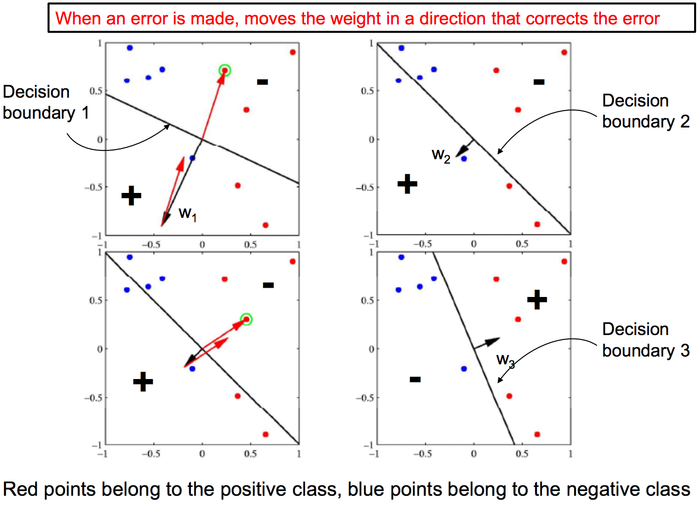
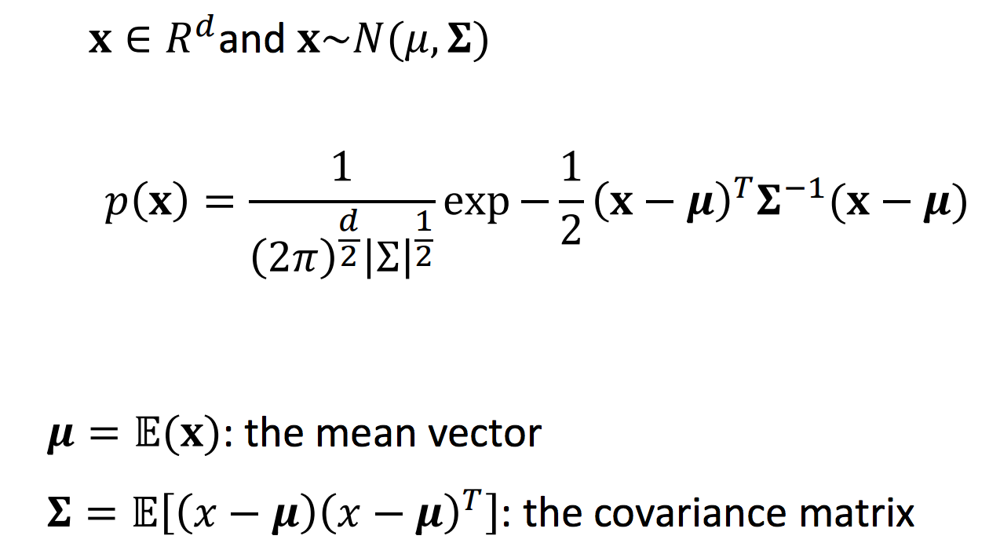
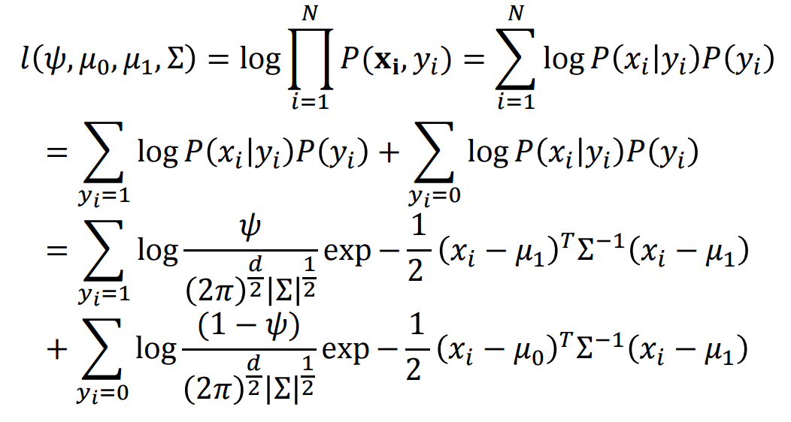
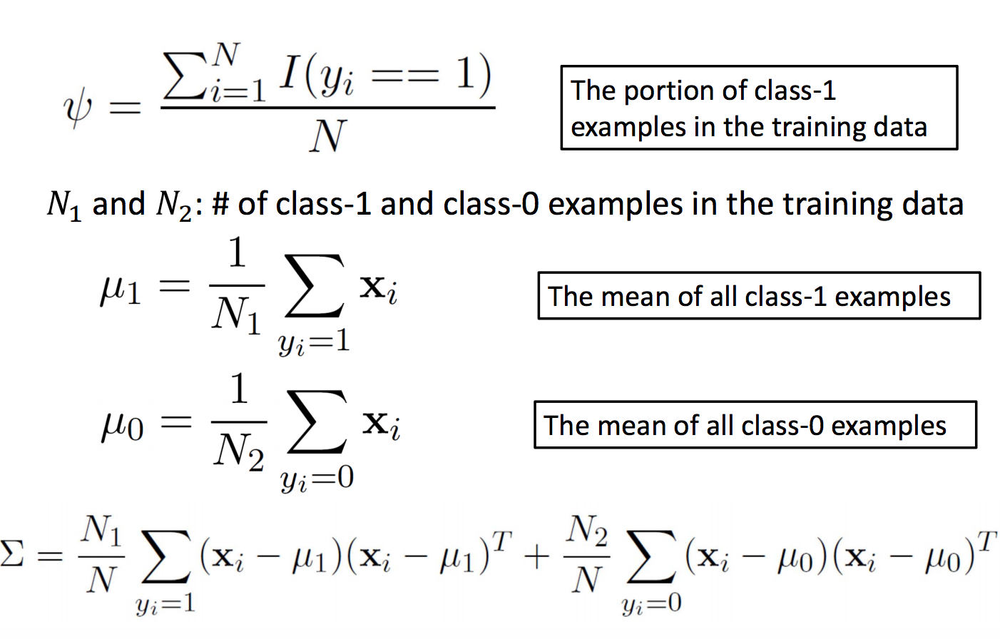
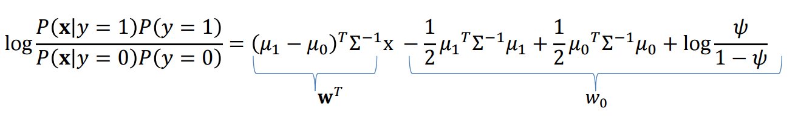

It is a long time when I wrote my recent post on Blogspot. Today, I
will introduce the series "Introduction to Machine Learning". I will present
the basic stuff only, so hope you enjoy reading. Notice, the words that I
emphasize are the keywords of machine learning, so you can search for these
keywords for more information.
Notice: This is the overview of basic and important machine
learning models, methods and concepts and theories. I acknowledge all
information and knowledge including images, data... I have taken from those
2 courses: https://www.coursera.org/learn/machine-learning
and http://classes.engr.oregonstate.edu/eecs/fall2015/cs534/.
You can download the whole article of summarizing Machine Learning at here:
http://web.engr.oregonstate.edu/~nguyenkh/ml-summary.pdf
Our series comprise of following topics:
- Section
1: Introduction, Linear regression, Generative and Discriminative
Model, Perceptron, Logistic Regression, Naive Bayes and Gaussian
Discriminant Analysis (this post)
- Section
2: Four important Discriminative Models: K-Nearest Neighbors,
Support Vector Machine, Decision Tree and Neural Network
- Section
3: Ensemble Methods (Bagging, Random Forest, Boosting) and
Clustering (HAC, KMeans, GMM, Spectral Clustering)
- Section
4: Dimension Reduction, Major problems in Machine Learning, ML
libraries and Summaries
Introduction
First, when we talk about Machine Learning, we usually talk about models to
fit the data. There are a lot of problems in Machine Learning, but we can
list some here are regression, classification and clustering.
On another aspect, we can classify Machine Learning method by supervised,
unsupervised and semi-supervised learning. With supervised
learning, we always have both $\{X,Y\}$ values in training examples while
unsupervised we just have $X$ value. Semi-supervised learning just has a
small number of $\{X,Y\}$ and major is $X$ only. So that is the differences
between many machine learning methods depend on learning problem.
Besides, we can divide the machine learning process into 4 steps as follow:
data pre-processing step, learning step, testing and report step. With data
pre-processing step with the aim is that transform the raw data into
standard data called training set input which have the form
$\{X,Y\}$ where $X = <x_1, x_2, x_3, \ldots, x_n>$ is the features
or attributes of the data. For example, when learning the parameter for
predicting the weather tomorrow is sunny or rainy. We have many features
like today's temperature, today's humidity, today's weather and so on. And
$Y$ is the value tomorrow's is rainy or sunny. With the learning step, the
learner (machine learning method) will try to learn some "hidden" parameters
from these training examples to form a model. After that, the
learner will apply this model to new data in testing set and try to
predict new $\hat{Y}$ from $X_{test}$ and compare values of $\hat{Y}$ with
the value of $Y_{test}$. In some learning method, they also have
hyper-parameter that is, cannot learn directly from the training example
only, they have to use another set called validation set to
learn these hyper-parameter. And finally report the result based on some metrics
for each different learning problems.
Now we come to the simple method for regression, that is linear regression.
Regression
Linear Regression
Linear Regression defines the relation between $X$ and $Y$ in linear.
That is
\[y = w_1x_1+w_2x_2 + \ldots + w_nx_n\]
where $w_1, w_2, \ldots, w_n$ are the parameters of $X$ to form a line or
hyperplane. Linear Regression's goal is to learn these parameters, and when
a new testing example, they will calculate the new $\hat{Y} = w_1x_1 +
w_2x_2 + \ldots + w_nx_n$. In the testing step, we just calculate
the accuracy of the linear regression model by using Sum of Square Error
metric, that is:
\[SSE = \frac{1}{2}\sum_{i=1}^{N}(\hat{y_i}-y_i)^2\]
The smaller SSE, the better learner. But how we estimate these $w$ for the
linear regression model. We have several ways. First, we can use normal
equation to find the closed form of the solution. In this case, we have $w =
(X^TX)^{-1}X^TY$, however, this way is just applied to a small dataset.
With larger data set, we cannot use this method, instead, we use Gradient
Descent method to find $w$. We have to set up the Target
function, in this case, is Loss function: SSE. We derive the gradient of SSE
with the following formula:
\[\nabla E(w) = \sum_{i=1}^{N}(w^Tx_i - y_i)x_i\]
And we update $w$ with formula: $w = w - \lambda\nabla E(w)$ we repeat this
step until $\nabla E(w) < \epsilon$, which $\epsilon$ is the converge
criterion. $\lambda$ here is learning rate. If $\lambda$ is small, slower to
converge but it avoids overstepping. Otherwise, $\lambda$ is large, the
learning algorithm will converge faster, but it will be oscillating in some
cases. That is Batch Gradient Descent, it requires all
training examples for each step to update $w$. In some cases, it takes a lot
of times to train. However, we can use Stochastic Gradient Descent to
update $w$ with just one learning example with $w = w - \lambda(w^Tx_i -
y_i)x_i$.
However, many problems in the real world are not linearly separable, so we
have to modify the Linear Regression to work well with nonlinearly separable
data as well. One of the solutions is to use a function with M-order
polynomial. Instead of using different features, we use different orders of
the same features or combine them in a different way.
For example, we can use $<1, x, x^2, x^3,\ldots>$ to fit non-linear
separable problems. With that idea, we can draw a conclusion is that the
higher the order, the better the learner will perform because it is clear
that the higher order will fit the data better than lower order polynomial.
But wait, it is right for training data, with the testing data, it is
another story. If the learner fit too much with the training data, it called
overfit, then when it comes with a new example from testing data, the
performance will decrease significantly. So we have a contradiction here is
the lower polynomial will not match with the data both from training data
and testing data, it called underfit, however, when the order of the
polynomial is so high, it makes the learner become overfit with the training
data. Therefore, there must be a particular order of polynomial that give
the best performance in testing data. We can see the illustration in the
following figure.
To achieve this, we have introduced the regularization term. We have
the objective function as follow.
\[\sum_{i=1}^{N}(\hat{y_i}-y_i)^2 + \lambda\sum_{j=0}^{M}|w_j|^q\]
where $\lambda$ in this scenario is regularization coefficient, $M$
is the order of the polynomial and $q$ is the type of regularizers (we
commonly have $q = 1$ is called Lasso regularization, $q=2$ is
called Ridge regularization). We can also use Gradient Descent
to estimate the $w$ from the Regularized Objective.
With the regularization term, we have the closed form of linear regression:
\[w = (\lambda I + X^TX)^{-1}X^TY,\]
If $\lambda$ is large, it puts more penalty for regularization term or high
order polynomial so it likely makes the lower order while small $\lambda$
will allow the learner fit more with the training data and it likely makes
the higher order. To get the optimal $\lambda$ we can use cross-validation
with k-fold. In this case, k is the number of parts
separated from the training data, with 1 part is used for testing and $k-1$
parts are used for training. The value of $\lambda$ that give the best
average performance on cross-validation is chosen.
That is all the basic things to know about the linear regression.
Classification
Generative and Discriminative Models
With Linear Regression model, we can solve many regression problems,
however, with classification problem we must have another model to handle.
There are two different approaches the classification problem, they
are Generative model and Discriminative model.
The Generative model in general will extract the probability distribution
from the training example, and then with the new example, they will estimate
the probability of the new example with different classes of classification
problem, i.e. $P(y=k|x)$, which $k$ is the class. The class with higher
probability $P(y=k|x)$ will be chosen. Examples of this type of model is Naive
Bayes and Linear Discrminative Analysis and
One important characteristic that all Generative Models have is to
use Bayes rule to calculate the $P(y=k|x)$:
\[P(y=k|x) = \frac{P(x,y = k)}{P(x)} = \frac{P(x|y = k) P(y)}{P(x)}\]
Because P(x) are the same for all k classes so we have:
\[P(y=k|x) \propto P(x|y = k) P(y) \Leftrightarrow \arg\max \limits_k
P(y=k|x) = \arg\max \limits_kP(x|y=k).P(y)\]
On the other hand, with the Discriminative model, there are two types of
model. First is using Probability to compute the $P(y=k|x)$ directly from
the data without using Bayes rule such as Logistic Regression. Other
is to find the decision boundary between classes directly. We can list here
some examples are Perceptron, Support Vector Machine (SVM)
and Decision Tree.
One important point to mention here is that all the models, which use
Probability to calculate the $P(y=k|x)$, form a group called Probabilistic
Graphical Model. Besides, the important characteristic among all
probabilistic models is likelihood. That is the relation between the given
data $D$ and the parameter $w$ that we want to estimate from that data.
\[P(w|D) = \frac{P(D|w) P(w)}{P(D)}\]
Because $P(D)$ are the same with all $w$ so we can omit P(D), so:
\[\propto P(D|w) P(w) = P(x,y|w) P(w) = P(y|x,w)P(x,w)P(w)\]
Because $P(x,w)$ can be dropped because it does not depend on $w$ or $w$ and
$x$ are independent, so:
\[\propto P(y|x,w)P(w)\]
So we have:
\[\arg\max \limits_wP(w|D) = \arg\max \limits_wP(y|x,w)P(w)\]
Notice that $P(w|D)$ is Posterior, $P(y|x,w)$ is Likelihood,
we can think it is a function with parameter $w$, so we can write in form of
$P(y|x)$; and $P(w)$ is Prior.
With Generative Model, we have $P(y|x) = \frac{P(x,y)}{P(x)} \propto
P(x,y)$, we calculate $P(y|x)$ by using Bayes rules as mentioned above.
With Discriminative Model, we calculate $P(y|x)$ directly from the data.
Perceptron
The most basic model for classification problems is Perceptron. It is a
linear classifier and just use a linear boundary to decide a point is belong
what class. It is quite simple with the idea is that if the classification
is wrong, it will change the decision boundary to fit with the new example.
With Perceptron model, we have:
\[y = sign(w_1x_1 + w_2x_2 + \ldots + w_nx_n) = sign(w^Tx)\]
We have to define the Loss function of Perceptron as follow:
\[J(w) = \frac{1}{n}\sum_{m=1}^{n}max(0, -y_mw^Tx_m )\]
\[J_m(w) = max(0, -y_mw^Tx_m ) \]
If we predict correctly, $-y_mw^Tx_m < 0$, so there is no loss.
Otherwise, when we predict wrong, $-y_mw^Tx_m > 0$. With the same
method as Linear Regression, we use Gradient Descent to estimate $w$ to
minimize the Loss Function above:
\[\nabla J(w) = \begin{cases}
0, & \text{if we predict correctly} \\
-y_mx_m, &
\text{otherwise}
\end{cases}\]
Notice that you can use both Batch Gradient Descent and Stochastic Gradient
Descent for particular purposes.
The boundary is characterized by normal vector $w = <w_1, w_2, w_3,
\ldots, w_n >$. If the Perceptron model misclassifies any example, the
new normal vector will be updated with the value: $w = w + y_mx_m$. We can
see an example in the following figure

So we complete the Perceptron model, the simplest model for classification
here. Next we discuss the Logistic Regression.
Logistic Regression
Logistic Regression is the most basic discriminative model that is simple
but strong enough to build larger model like Neural Network. Logistic
Regression is much like linear regression with minor exception we will
discuss later. As we say above Logistic Regression is one of probabilistic
graphical model so we have the likelihood as follow, remember we calculate
$P(y|x)$ directly from the data:
\[h(x) = P(y = k|x) = \frac{1}{1+e^{-w^Tx}}\]
With the notice that function $h(x)$ above is called Sigmoid
function which has value in range $(0, 1)$ from the value of $w^Tx$ in range
$(-\infty, \infty)$. Our job is to find $w$ such that it maximize the term
likelihood above. To do that, we have the reversed method of Gradient
Descent called Gradient Ascent. That maximize the
objective function, in this case is the likelihood above. Also, the process
of maximize the likelihood is called Maximum Likelihood Estimation.
With the same process with Gradient Descent, we first get the derivative of
the objective function and then using iterative to update the $w$ and after
a number of iterative, the Algorithm will converge to get a optimal $w$.
In more detail, we have the likelihood function of Logistic regression can
be written in compact form as $P(y_i|x_i) =
\hat{y}_i^{y_i}(1-\hat{y}_i)^{(1-y_i)}$ where $\hat{y}_i =
\frac{1}{1+e^{-w^Tx_i}}$. Remember that each training example $(x_i,y_i)$ is
drawn Independent and identically distributed (IID) and we
can use log of likelihood function, called Log likelihood function
above for easy calculation: $l(w) = \sum_{i}\log P(y_i|x_i)$
We use Gradient Ascent and get:
\[\nabla l(w) = \sum_{i=1}^{N}(y_i-\hat{y}_i)x_i\]
With new example, we first compute the sigmoid function of $P(y=k|x_{new})$
we classify new example belong to class $k$ if the value of sigmoid function
is greater than the Threshold $\theta$, otherwise it
belongs to another. We can also use Logistic Regression for Multi-class
Classification. We have 2 approaches: one vs. rest and pairwise. We set up
the posterior probability using a so-called soft-max or normalized
exponential function
\[P(y=k|x) = \hat{y}_k = \frac{e^{w_k^Tx}}{\sum_{j=1}^{K}{e^{w^T_jx}}}\]
We will get the: $\nabla l(w) = \sum_{i=1}^{N}{(y^i_k-\hat{y}^i_k)x^i}$
where $y^i_k = 1$ if $y^i = k$, and 0 otherwise.
In the Linear Regression, we use Regularization term called $\lambda
\sum_{j=0}^{M}{|w_j|^q}$. So I will talk about it in more detail. First,
from the Discriminative part in above section, I have discussed the
Posterior $P(w|D)$ and Prior $P(w)$. If $w$ is a constant, we have $P(w)$ is
a constant to. However, in case of $w$ is a random variable, we have $P(w)$
is a prior distribution, which can can get advantage of knowing a prior
knowledge about the $w$ for less complex calculation. For example, in
Logistic Regression, we can assume that $P(w)$ is a Normal
Distribution ~ $N(0, \sigma^2)$. We called this method is Maximum
A Posterior (MAP). Large weight for prior values correspond to
more complex hypothesis, so this prior prefer simpler hypothesis. Thus we
have new log likelihood function for Logistic Regression:
\[ \arg\max \limits_w \sum_{j}{log
P(y_j|x_j,w)}-\frac{\lambda}{2}\sum_i{w_i^2}\]
The regularization term here is $-\frac{\lambda}{2}\sum_i{w_i^2}$ where
$\lambda = \frac{1}{\sigma^2}$and the new Gradient is
\[\nabla L(w) = \sum_{i = 1}^{N}{(y_i-\hat{y}_i)x_i-\lambda w}\]
We again, can use the value of $\lambda$ to control the complexity of model.
If $\lambda$ is small, it is equivalent to MLE, we do not make use of prior
knowledge, lead to over-fitting. If $\lambda$ is large, it ignores training
data, just based on the prior knowledge. We want to find the best value of
$\lambda$ to both make use of prior knowledge and learning data.
Last but not least, because Logistic regression is a discriminative model,
we talk about its decision boundary. At first glance, we saw the sigmoid
function is not linear, so we conclude that the decision boundary. It
completely wrong, the term $w^Tx$ in Sigmoid function is linear function so
it also has linear decision boundary. We decide 1 if $P(y=1|x) > P(y=0|x)
\Rightarrow \frac{P(y=1|x)}{P(y=0|x)} > 1 \Rightarrow
\log{\frac{P(y=1|x)}{P(y=0|x) > 0}} \Rightarrow w^Tx > 0$. It separate
the space into 2 parts which have $w^Tx>0$ and $w^Tx < 0$ with a
decision line is $w^Tx = 0$. However, with non-linear sigmoid function, for
example we have: $g(x) = w_0 + w_1x_1 + w_2x_1^2 + w_3x_2^2$. $x_1, x_2$
have circular relation, so we have Decision boundary is a circle (center at
$(0,0)$ and a radius of 1) which divides the space into 2 parts, outside the
circle ($g(x) \geq 0$) we predict 1 and inside the circle ($g(x) < 0$) we
predict 0. The following figure will give more detail.
To this point, we complete the Logistic Regression here. Next, we move on a
example of Generative Model, that is Naive Bayes model which is the simplest
Generative Model.
Naive Bayes
With Naive Bayes, we should use the assumption of conditional independence
(naive) between different features $x_i$ given class $y$. Naive Bayes model
is usually used in Text Retrieval and Text Classification problem, the
problem of judging documents as belonging to one category or the other. As
talking about the Likelihood of Generative model, in general form, Naive
Bayes can be written as:
\[ P(y|x) = \frac{P(x|y)P(y)}{P(x)} \]
Because $P(x)$ is the same in all different classes, so we have: $P(y|x)
\propto P(x|y)P(y)$.
As we say earlier, we assumed that different features are independent given
the class so we have
\[P(y|x) \propto \prod_{i = 1}^{M}{P(x_i|y)}P(y)\]
where M is the number of features. To exactly compute $P(y|x)$, we have to
compute the term $P(x)$ as follow:
\[P(x) = \sum_{k=1}^{K}{\prod_{i=1}^{M}{P(x_i|y = k)P(y = k)}}\]
where $K$ is the number of classes. Again, we have the product function,
instead of maximizing the likelihood directly, we can use log-likelihood for
easier calculation. So we have:
\[\log P(y|x) \propto \sum_{i = 1}^{M}{\log P(x_i|y)}P(y)\]
Thus we have:
\[\hat{y} = \arg\max \limits_y P(y)\sum_{i = 1}^{M}{\log P(x_i|y)}\]
With this conditional independent assumption, we can reduce the number of
parameters for $P(x|y)$ from $k(2^d - 1)$ to $kd$ parameters where k is the
number of classes and d is the number of features. It removes the need for
memorization and significantly reduces over-fitting. In addition to
parameter for representing $P(y)$, we have total number of parameters for
Naive Bayes model is $k(d-1) + (k - 1)$. To this point, all the things we
have to do is compute each $P(x_i|y)$ correctly. Notice that $y$ is Discrete
variable and we can easily compute $P(y)$ from the training set (i.e.,
(prior for a given class) = (number of samples in the class) / (total number
of samples)). So depends on the value of $x$, we have different distribution
of $P(x_i|y)$. With $x$ is continuous, we have one popular distribution is Gaussian
Naive Bayes (GNB), and when $x$ is discrete, we have 2 popular
distributions is Bernoulli Naive Bayes (BNB) and Multinomial
Naive Bayes.
With Gaussian Naive Bayes, we assume that the continuous values associated
with each class are distributed according to a Gaussian distribution.
For example, suppose the training data contain a continuous attribute, $x$.
We first segment the data by the class, and then compute the mean and
variance of $x$ in each class. Let $\mu_k$ be the mean of the values in x
associated with class $k$, and let $\sigma^2_k$ be the variance of the
values in $x$ associated with class $k$. Then, the probability distribution
of some value $v$ given a class, $p(x_i=v|y=k)$, can be computed by plugging
$v$ into the equation for a Normal distribution parameterized by $\mu_c$ and
$\sigma^2_c$. That is,
\[p(x_i=v|y=k)=\frac{1}{\sqrt{2\pi\sigma^2_k}}\,e^{
-\frac{(v-\mu_k)^2}{2\sigma^2_k}}\]
Next, we discuss Bernoulli Naive Bayes. Instead of being continuous, in this
case, $x$ is binary value which only have value $0$ and $1$. $x_i = 1$
represents the occurrence of the word $i^{th}$ in the vocabulary (for
example in Document Classification task), and vice versa $x_i = 0$
represents the absence of the word $i^{th}$ in the vocabulary. So the
likelihood of the document given the class $k$ is:
\[P(x_i|y=k) = p_{ki}^{x_i} (1 - p_{ki})^{(1-x_i)} \Leftrightarrow log
P(x_i|y=k) = x_i log p_{ki} + (1-x_i) log (1-p_{ki})\]
where $p_{ki}$ is the probability of class $k$ generating the term $w_i$. We
use MLE for Bernoulli to estimate $p_{ki}$ as follow:
\[p_{ki} = \frac{\text{number of documents contain word $i$ in class
k}}{\text{total number of documents in class k}}\]
Then, we talk about the Multinomial Naive Bayes. $x$ is also discrete but
$x_i$ now represents for number of occurrence of word $i^{th}$ in the
document. so we have the likelihood of the document given the class $k$ as
follow:
\[P(x_i|y=k) = p_{ki}^{x_i} \Leftrightarrow log P(x_i|y=k) = x_i log
p_{ki}\]
In this case, we have the likelihood
\[\begin{align}
\log P(y=k|x) & \varpropto \log \left( P(y=k) \prod_{i=1}^n
{p_{ki}}^{x_i} \right) \\
& = \log P(y = k) + \sum_{i=1}^n x_i \cdot \log
p_{ki}
\\
& = b + \mathbf{w}_k^\top \mathbf{x}
\end{align}\]
where $b = \log p(y = k)$ and $w_{ki} = \log p_{ki}$. So we can see that
Naive Bayes with Discrete value of $x$ becomes a linear classifier like
Logistic Regression in log-space. Again, we use MLE for Multinomial to
estimate the value of $p_{ki}$, which lead to:
\[p_{ki} = \frac{\text{number of word $i$ in class k}}{\text{total number of
words in class k}}\]
When we use MLE for estimating discrete data of Naive Bayes, we have to deal
with the problem is that with some rare words say "Mahalanobis", when
compute the $P(x_i|y=k)$, $p_{ki} = 0$, that leads to whole $P(y=k|x) = 0$,
it seems like the class $k$, which does not have the word "Mahalanobis" in
the training set, is the not the class of given test example although other
words in test example all belongs to this $k$ class. To deal with that
problem, we have to use the MAP (Maximum a Posterior) as mentioned above. We
introduce the Conjugate Prior Distribution of the base
distribution. In particular, the conjugate prior distribution of Bernoulli
distribution is Beta distribution and Conjugate prior distribution of
Multinomial distribution is Dirichlet distribution. The definition of
conjugate prior can be seen more in Wikipedia (https://en.wikipedia.org/wiki/Conjugate_prior).
For Bernoulli NB, we estimate the optimize $w = \frac{n_i + \alpha - 1}{n +
\alpha + \beta - 2}$ where $n_i, n, \alpha, \beta$ are the number of
documents contain word $i^{th}$ of class $k$, number of documents of class
$k$ and 2 parameters of Beta distribution respectively. We usually choose
$\alpha = \beta = 2$, and $w_{MAP} = \frac{n_i+1}{n+2}$ and we call this is
Laplace Smoothing.
For Multinomial NB, with $K$ outcomes, a Dirichlet distribution has
$K$ parameters, each serves a similar purpose as Beta distribution's
parameters. Laplace Smoothing in this case:
\[P_{ki} = \frac{n_k + 1}{n + K}\]
In case of document of classification, $p_{ki} = \frac{n_i + 1}{n + V}$,
where $n_i$ is the number of word $i$ in class $k$, $n$ is the total number
of words in class $k$ and $V$ is the size of vocabulary. Furthermore, we can
use parameter $\alpha$ to control this smoothing as follow:
\[p_{ki} = \frac{n_i + \alpha}{n + \alpha V}\]
when $\alpha = 0$ this smoothing becomes MLE, when $\alpha = 1$, this is
Laplace Smoothing. With different dataset, we have different optimal
$\alpha$ and we have to use cross validation to choose the best $alpha$ for
each dataset.
That's all the things I want to discuss about the Naive Bayes. I move on to
another Generative models called Linear Discriminant Analysis.
Gaussian Discriminant Analysis
Gaussian Discriminant Analysis or Linear Discriminant Analysis (LDA) is a
generative model (it is confused with its name, huh?), in which we
can learn the model's parameters by maximizing the joint likelihood
$P(x,y) = P(x|y)P(y)$. Then we predict the class for giving testing
example by:
\[\arg \max \limits_y P(y|x) = \arg \max \limits_y
\frac{P(x|y)P(y)}{P(x)} = \arg \max \limits_y P(x|y)P(y) \]
In LDA, in basic set up, $y$ has two values, which means 2 classes. We
assume that each class draws from normal distribution:
\[ P(x|y = 0) \sim N(\mu_0, \Sigma) \]
\[P(x|y = 1) \sim N(\mu_1, \Sigma) \]
Note that $\mu_0, \mu_1$ are 2 different means of 2 normal distributions,
$\Sigma$ is shared covariance matrix.

I will recall some knowledge about Multivariate Gaussian as follow:


Like Naive Bayes, we also use MLE to estimate the parameters, and get:

Next, we talk about the linear decision boundary of LDA. We will predict $y
= 1$ if:
\[\frac{P(x|y = 1)P(y=1)}{P(x|y = 0)P(y = 0)} > 1\]
Equivalently:
\[log{\frac{P(x|y = 1)P(y=1)}{P(x|y = 0)P(y = 0)}} >0 = w^Tx + w_0 >
0\]
Besides, we have:

We can see that, it looks like decision boundary of logistic regression. In
Logistic Regression, we conclude that the decision boundary of linear
sigmoid function of logistic regression is a linear boundary. We also have
the observation is that LDA makes stronger and more restrictive assumption.
If we don't know if the data is followed Gaussian distribution, logistic
regression will be more robust. Otherwise, LDA is preferred.
We complete LDA, and also complete the first section of series "Introduction
to Machine Learning". In the next section, we talk about very famous Machine
Learning models, they are K-Nearest Neighbors, Support Vector Machine (SVM),
Decision Tree and Neural Network. Hope you enjoy reading my blog!